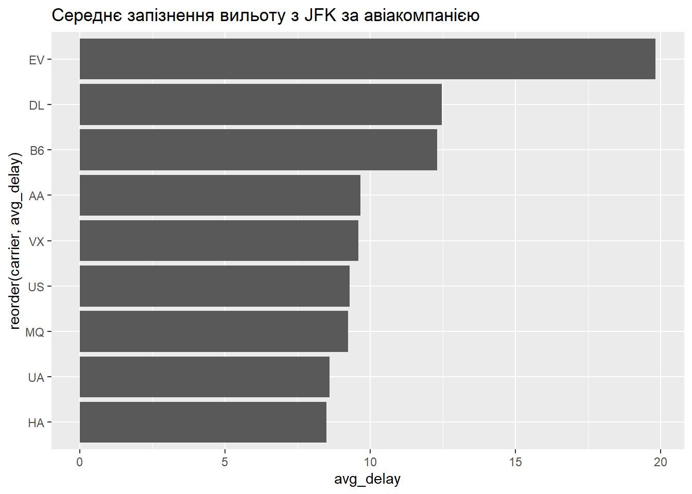
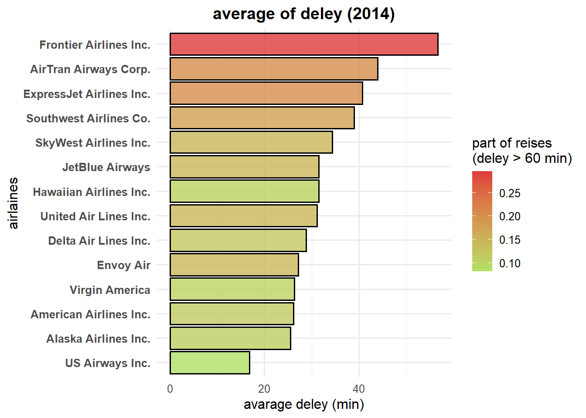

Code
library(data.table)
input <- if (file.exists("flights14.csv")) {
"flights14.csv"
} else {
"https://raw.githubusercontent.com/Rdatatable/data.table/master/vignettes/flights14.csv"
}
flights <- fread(input)Інженерія даних | КрНУ ім. М. Остроградського
Освоїти сучасний інструмент для роботи з великими обсягами даних у R — пакет data.table. Навчитися виконувати швидкі, пам’ять-ефективні операції над мільйонами рядків: фільтрацію, агрегацію, оновлення, злиття — з використанням унікального синтаксису DT[i, j, by]. Зрозуміти, чому data.table є ключовим інструментом інженера даних при роботі з великими даними.
✅ Використовувати синтаксис DT[i, j, by] для фільтрації (i), обчислення (j) та групування (by).
✅ Виконувати агрегацію та підсумовування за групами зі швидкістю, яка перевершує dplyr у 10–100 разів.
✅ Оновлювати дані на місці (by reference) без створення копій — що критично для економії пам’яті.
✅ Виконувати злиття таблиць (merge) з використанням on = або key.
✅ Перетворювати data.frame у data.table та навпаки без втрати продуктивності.
✅ Працювати з великими файлами (CSV, TSV) напряму через fread() — швидше за vroom у деяких сценаріях.
✅ Інтегрувати data.table у функціональні конвеєри, зберігаючи читабельність та ефективність.
Див. [@datatable2025]
У світі інженерії даних часто доводиться працювати з обсягами, які перевищують оперативну пам’ять або містять мільйони/мільярди рядків. У таких умовах навіть найелегантніший код на dplyr стає повільним і ресурсоємним.
Пакет data.table — це оптимізована альтернатива для таких завдань. Він поєднує:
- Швидкість C-реалізації (багато операцій виконуються за \(O(1)\) або \(O(log n))\)
- Ефективне використання пам’яті (оновлення на місці, lazy evaluation)
- Компактний синтаксис (DT[i, j, by] замість довгих конвеєрів).
На відміну від dplyr, який орієнтований на читабельність, data.table орієнтований на продуктивність та масштабованість — саме те, що потрібно інженеру даних.
Ця лабораторна робота знайомить вас із:
базовим синтаксисом data.table
фільтрацією, агрегацією, оновленням
злиттям таблиць
завантаженням великих файлів через fread().
Ми навчимося робити те саме, що й у dplyr, але значно швидше і з меншим споживанням пам’яті — що є критичним у production-середовищах.
DT[i, j, by]: фільтрація, обчислення та групуванняПакет data.table вводить компактний і швидкий синтаксис DT[i, j, by], який об’єднує три ключові операції в одному виразі:
i — умова фільтрації рядків (аналог filter() у dplyr);
j — вираз для обчислення нових стовпців або вибору існуючих (аналог select()/mutate());
by — змінні для групування (аналог group_by()).
i)Завантажимо дані:
library(data.table)
input <- if (file.exists("flights14.csv")) {
"flights14.csv"
} else {
"https://raw.githubusercontent.com/Rdatatable/data.table/master/vignettes/flights14.csv"
}
flights <- fread(input)Тепер знайдемо всі рейси авіакомпанії "AA" (American Airlines):
flights[carrier == "AA"] year month day dep_delay arr_delay carrier origin dest air_time
<int> <int> <int> <int> <int> <char> <char> <char> <int>
1: 2014 1 1 14 13 AA JFK LAX 359
2: 2014 1 1 -3 13 AA JFK LAX 363
3: 2014 1 1 2 9 AA JFK LAX 351
4: 2014 1 1 -8 -26 AA LGA PBI 157
5: 2014 1 1 2 1 AA JFK LAX 350
---
26298: 2014 10 31 -2 -16 AA LGA MIA 156
26299: 2014 10 31 -4 -16 AA EWR DFW 192
26300: 2014 10 31 -4 -7 AA JFK MCO 135
26301: 2014 10 31 29 4 AA JFK MIA 146
26302: 2014 10 31 -3 -2 AA JFK DCA 51
distance hour
<int> <int>
1: 2475 9
2: 2475 11
3: 2475 19
4: 1035 7
5: 2475 13
---
26298: 1096 19
26299: 1372 16
26300: 944 6
26301: 1089 19
26302: 213 15Це еквівалентно dplyr::filter(flights, carrier == "AA"), але виконується значно швидше, оскільки data.table використовує індексацію та оптимізований C-код.
j)Виберемо лише стовпці origin, dest, dep_delay та обчислимо новий стовпець — загальну тривалість польоту в хвилинах:
flights[, .(origin, dest, dep_delay, total_time = air_time + dep_delay)] origin dest dep_delay total_time
<char> <char> <int> <int>
1: JFK LAX 14 373
2: JFK LAX -3 360
3: JFK LAX 2 353
4: LGA PBI -8 149
5: JFK LAX 2 352
---
253312: LGA IAH 1 202
253313: EWR IAH -5 184
253314: LGA RDU -8 75
253315: LGA DTW -4 71
253316: LGA SDF -5 105Тут:
.() — скорочення для list(), яке створює новий data.table;
total_time — новий стовпець, обчислений на льоту.
Це замінює комбінацію select() + mutate() у dplyr.
by)Обчислимо середнє запізнення вильоту (dep_delay) за кожною авіакомпанією:
flights[, .(avg_delay = mean(dep_delay, na.rm = TRUE)), by = carrier] carrier avg_delay
<char> <num>
1: AA 8.510532
2: AS 8.831010
3: B6 11.991007
4: DL 12.209798
5: EV 17.561290
6: F9 24.712474
7: FL 20.596323
8: HA 8.488462
9: MQ 8.059324
10: VX 10.375860
11: WN 18.931524
12: UA 14.296086
13: US 3.516000
14: OO 12.575000Результат — таблиця з двома стовпцями: carrier та avg_delay.
Можна групувати за кількома змінними:
flights[, .(avg_delay = mean(dep_delay, na.rm = TRUE)), by = .(carrier, origin)] carrier origin avg_delay
<char> <char> <num>
1: AA JFK 9.654953
2: AA LGA 6.255840
3: AA EWR 13.343526
4: AS EWR 8.831010
5: B6 JFK 12.291613
6: B6 EWR 10.267860
7: B6 LGA 11.812160
8: DL LGA 11.350830
9: DL EWR 14.961714
10: DL JFK 12.454136
11: EV EWR 17.194154
12: EV LGA 18.327672
13: F9 LGA 24.712474
14: FL LGA 20.596323
15: HA JFK 8.488462
16: MQ LGA 7.458140
17: MQ JFK 9.234019
18: VX JFK 9.591460
19: VX EWR 12.024939
20: WN EWR 19.768463
21: WN LGA 18.364482
22: MQ EWR 16.377246
23: EV JFK 19.818522
24: UA EWR 15.124516
25: UA LGA 13.080881
26: UA JFK 8.595566
27: US EWR 5.703736
28: US JFK 9.284688
29: US LGA 1.363388
30: OO LGA 12.592965
31: OO EWR 9.000000
32: VX LGA -6.266667
carrier origin avg_delayЗнайдемо максимальне запізнення прибуття (arr_delay) для кожного аеропорту вильоту (origin), але лише для рейсів з запізненням вильоту > 60 хв:
flights[dep_delay > 60, .(max_arr_delay = max(arr_delay, na.rm = TRUE)), by = origin] origin max_arr_delay
<char> <int>
1: JFK 1223
2: EWR 1494
3: LGA 996Тут:
i = dep_delay > 60 — фільтрація,
j = .(max_arr_delay = ...) — агрегація,
by = origin — групування.
DT[i, j, by]:Компактність: одна лінійка замість кількох у dplyr.
Швидкість: операції виконуються на C-рівні.
Читабельність: логіка “фільтруй → обчисли → групуй” відображена прямо в синтаксисі.
Ефективність пам’яті: немає проміжних копій даних.
Цей підхід є основою інженерії даних у data.table і дозволяє обробляти мільйони рядків за долі секунди — саме те, що потрібно в production-середовищі.
У data.table агрегація за групами виконується значно швидше, ніж у dplyr, завдяки внутрішній оптимізації через хеш-таблиці та векторизовані функції. Синтаксис залишається компактним: групування задається у третьому аргументі by.
Тепер обчислимо середнє запізнення вильоту (dep_delay) для кожної авіакомпанії (carrier):
flights[, .(avg_delay = mean(dep_delay, na.rm = TRUE)), by = carrier] carrier avg_delay
<char> <num>
1: AA 8.510532
2: AS 8.831010
3: B6 11.991007
4: DL 12.209798
5: EV 17.561290
6: F9 24.712474
7: FL 20.596323
8: HA 8.488462
9: MQ 8.059324
10: VX 10.375860
11: WN 18.931524
12: UA 14.296086
13: US 3.516000
14: OO 12.575000Результат — компактна таблиця з двома стовпцями: carrier та avg_delay.
dplyrТой самий результат у dplyr:
library(dplyr)
flights_df <- as.data.frame(flights)
flights_df %>%
group_by(carrier) %>%
summarise(avg_delay = mean(dep_delay, na.rm = TRUE))# A tibble: 14 × 2
carrier avg_delay
<chr> <dbl>
1 AA 8.51
2 AS 8.83
3 B6 12.0
4 DL 12.2
5 EV 17.6
6 F9 24.7
7 FL 20.6
8 HA 8.49
9 MQ 8.06
10 OO 12.6
11 UA 14.3
12 US 3.52
13 VX 10.4
14 WN 18.9 Але data.table:
не створює проміжних копій
виконується в 10–100 разів швидше на великих даних
використовує менше пам’яті
Можна групувати за декількома змінними:
flights[, .(avg_delay = mean(dep_delay, na.rm = TRUE)), by = .(carrier, origin)] carrier origin avg_delay
<char> <char> <num>
1: AA JFK 9.654953
2: AA LGA 6.255840
3: AA EWR 13.343526
4: AS EWR 8.831010
5: B6 JFK 12.291613
6: B6 EWR 10.267860
7: B6 LGA 11.812160
8: DL LGA 11.350830
9: DL EWR 14.961714
10: DL JFK 12.454136
11: EV EWR 17.194154
12: EV LGA 18.327672
13: F9 LGA 24.712474
14: FL LGA 20.596323
15: HA JFK 8.488462
16: MQ LGA 7.458140
17: MQ JFK 9.234019
18: VX JFK 9.591460
19: VX EWR 12.024939
20: WN EWR 19.768463
21: WN LGA 18.364482
22: MQ EWR 16.377246
23: EV JFK 19.818522
24: UA EWR 15.124516
25: UA LGA 13.080881
26: UA JFK 8.595566
27: US EWR 5.703736
28: US JFK 9.284688
29: US LGA 1.363388
30: OO LGA 12.592965
31: OO EWR 9.000000
32: VX LGA -6.266667
carrier origin avg_delayЦе дасть середнє запізнення для кожної комбінації авіакомпанії та аеропорту вильоту.
flights[, .(
avg_delay = mean(dep_delay, na.rm = TRUE),
max_delay = max(dep_delay, na.rm = TRUE),
n_flights = .N
), by = carrier] carrier avg_delay max_delay n_flights
<char> <num> <int> <int>
1: AA 8.510532 1498 26302
2: AS 8.831010 341 574
3: B6 11.991007 594 44479
4: DL 12.209798 1087 41683
5: EV 17.561290 665 39819
6: F9 24.712474 417 473
7: FL 20.596323 632 1251
8: HA 8.488462 922 260
9: MQ 8.059324 354 18559
10: VX 10.375860 430 4797
11: WN 18.931524 570 11902
12: UA 14.296086 618 46267
13: US 3.516000 449 16750
14: OO 12.575000 414 200Тут:
.N — вбудована змінна, що містить кількість рядків у групі.data.table:Швидкість: оптимізація на рівні C.
Ефективність пам’яті: немає копіювання даних.
Гнучкість: підтримка складних агрегатів у одному виразі.
Масштабованість: працює з мільйонами/мільярдами рядків без проблем.
Однією з ключових переваг data.table є можливість оновлювати дані на місці (in-place), тобто без створення копій об’єкта. Це досягається за допомогою оператора :=, який працює by reference — прямо в пам’яті, без додаткового виділення ресурсів.
Це критично важливо при роботі з великими даними, де кожна копія може займати гігабайти пам’яті.
Додамо стовпець speed (швидкість у милях на годину) до датасету flights:
# Додаємо новий стовпець НА МІСЦІ
flights[, speed := distance / (air_time / 60)]Після цього:
flights містить новий стовпець speed
не створено новий об’єкт
пам’ять не збільшилася пропорційно розміру таблиці.
dplyrУ dplyr той самий результат вимагає створення нового об’єкта:
flights_df <- as.data.frame(flights)
flights_df <- flights_df %>% mutate(speed = distance / (air_time / 60))Тут:
створюється нова копія flights_df,
стара версія залишається в пам’яті, доки не буде зібрана збирачем сміття,
витрачається час на копіювання мільйонів значень.
Можна також оновлювати існуючі стовпці:
# Замінимо від’ємні запізнення на 0
flights[dep_delay < 0, dep_delay := 0]Це — умовне оновлення на місці, яке не створює проміжних структур.
Видалення стовпців також відбувається на місці:
flights[, c("hour") := NULL]Економія пам’яті: немає дублювання даних.
Швидкість: операції виконуються миттєво, навіть на мільйонах рядків.
Масштабованість: дозволяє працювати з даними, що перевищують RAM.
Чистота коду: немає потреби у присвоєнні (<-) після кожної операції.
merge() та ключіУ реальних ETL-процесах дані часто розподілені між кількома таблицями (наприклад, інформація про рейси, авіакомпанії, літаки, погоду). Для їх об’єднання data.table надає ефективні механізми злиття, які працюють швидше за аналоги в dplyr.
Через аргумент on = — не вимагає попереднього сортування:
# Приклад: додаємо назву авіакомпанії до рейсів
airlines <- data.table(carrier = c("AA", "UA", "DL"),
name = c("American", "United", "Delta"))
setkey(airlines, carrier) # необов’язково, але прискорює
flights[airlines, on = "carrier", name := i.name]Тут i.name — це стовпець name з таблиці airlines (префікс i. позначає “іншу” таблицю).
Через ключі (setkey()) — для максимальної швидкості:
setkey(flights, carrier)
setkey(airlines, carrier)
merged <- flights[airlines]Після встановлення ключа злиття відбувається за бінарним пошуком (\(O(log n)\)), що критично для великих даних.
X[Y] — еквівалент left_join у dplyr (зберігає всі рядки з X).
Y[X] — зберігає всі рядки з Y.
Для внутрішнього злиття використовуйте nomatch = NULL:
flights[airlines, nomatch = NULL]Key: <carrier>
year month day dep_delay arr_delay carrier origin dest air_time
<int> <int> <int> <int> <int> <char> <char> <char> <int>
1: 2014 1 1 14 13 AA JFK LAX 359
2: 2014 1 1 0 13 AA JFK LAX 363
3: 2014 1 1 2 9 AA JFK LAX 351
4: 2014 1 1 0 -26 AA LGA PBI 157
5: 2014 1 1 2 1 AA JFK LAX 350
---
114248: 2014 10 31 427 393 UA EWR ORD 100
114249: 2014 10 31 10 -27 UA EWR LAX 326
114250: 2014 10 31 18 -14 UA EWR LAS 291
114251: 2014 10 31 1 -30 UA LGA IAH 201
114252: 2014 10 31 0 -14 UA EWR IAH 189
distance speed name i.name
<int> <num> <char> <char>
1: 2475 413.6490 American American
2: 2475 409.0909 American American
3: 2475 423.0769 American American
4: 1035 395.5414 American American
5: 2475 424.2857 American American
---
114248: 719 431.4000 United United
114249: 2454 451.6564 United United
114250: 2227 459.1753 United United
114251: 1416 422.6866 United United
114252: 1400 444.4444 United Uniteddata.table:Швидкість: використання індексів та бінарного пошуку.
Ефективність пам’яті: немає створення проміжних копій при оновленні на місці.
Гнучкість: підтримка умовних злиттів (наприклад, on = .(carrier, origin)).
data.frame та data.tableПакет data.table повністю сумісний з базовим класом data.frame, що дозволяє легко інтегрувати його в існуючі проєкти без повного переписування коду. Ключові функції для перетворення:
setDT() — перетворює data.frame на data.table на місці (без копіювання).
setDF() — навпаки, перетворює data.table назад у data.frame на місці.
as.data.table() — створює новий об’єкт data.table (аналог as.data.frame()).
data.frame → data.tablelibrary(data.table)
# Завантажуємо дані як data.frame (наприклад, через read.csv)
flights_df <- read.csv("data/flights14.csv")
# Перетворюємо НА МІСЦІ
setDT(flights_df)
# Тепер flights_df — це data.table
class(flights_df) # "data.table" "data.frame"[1] "data.table" "data.frame"💡 Перевага
setDT(): не створює копії, тому пам’ять не подвоюється — критично для великих даних.
data.table → data.frame# Повертаємо до data.frame (наприклад, для сумісності з ggplot2)
setDF(flights_df)
class(flights_df) # "data.frame"[1] "data.frame"Ви отримали дані через read.csv() або vroom() → перетворюєте на data.table для швидкої обробки.
Після обробки вам потрібно передати дані в пакет, що не підтримує data.table (наприклад, деякі моделі) → перетворюєте назад.
fread()Функція fread() — це один із найшвидших інструментів у R для читання текстових файлів (CSV, TSV, інші роздільники). Вона є частиною пакета data.table і призначена для масштабованого завантаження даних, навіть коли файли мають гігабайти.
fread():Автоматичне визначення: роздільника, заголовків, типів даних.
Підтримка URL: можна читати файли прямо з GitHub, S3 тощо.
Часткове читання: завантажити лише перші n рядків (nrows), пропустити перші skip рядків.
Підтримка стиснених файлів: .csv.gz, .csv.bz2 без попереднього розпакування.
Швидкість: часто перевершує vroom у складних сценаріях (наприклад, коли є багато NA, нестандартні роздільники).
library(data.table)
# Завантаження з локального файлу або з GitHub
input <- if (file.exists("flights14.csv")) {
"flights14.csv"
} else {
"https://raw.githubusercontent.com/Rdatatable/data.table/master/vignettes/flights14.csv"
}
flights <- fread(input)Цей код:
автоматично визначить, що це CSV з заголовком,
правильно визначить типи (integer, character, тощо),
завантажить 253 316 рядків за долі секунди.
read.csv() та vroom()read.csv() — повільний, створює data.frame, вимагає ручного вказування параметрів.
vroom() — швидкий, але іноді менш надійний при складних структурах.
fread() — найбільш надійний і швидкий для ETL-процесів у production.
# Завантажити лише перші 1000 рядків
fread(input, nrows = 1000) year month day dep_delay arr_delay carrier origin dest air_time
<int> <int> <int> <int> <int> <char> <char> <char> <int>
1: 2014 1 1 14 13 AA JFK LAX 359
2: 2014 1 1 -3 13 AA JFK LAX 363
3: 2014 1 1 2 9 AA JFK LAX 351
4: 2014 1 1 -8 -26 AA LGA PBI 157
5: 2014 1 1 2 1 AA JFK LAX 350
---
996: 2014 1 2 -1 -9 DL JFK SLC 282
997: 2014 1 2 202 213 DL EWR ATL 137
998: 2014 1 2 18 43 DL LGA DEN 235
999: 2014 1 2 0 29 DL EWR ATL 142
1000: 2014 1 2 -1 3 DL EWR ATL 127
distance hour
<int> <int>
1: 2475 9
2: 2475 11
3: 2475 19
4: 1035 7
5: 2475 13
---
996: 1990 6
997: 746 9
998: 1620 8
999: 746 14
1000: 746 11# Пропустити перші 100 рядків
fread(input, skip = 100) V1 V2 V3 V4 V5 V6 V7 V8 V9 V10 V11
<int> <int> <int> <int> <int> <char> <char> <char> <int> <int> <int>
1: 2014 1 1 -3 -10 B6 JFK SAN 342 2446 8
2: 2014 1 1 -9 -14 B6 JFK FLL 159 1069 19
3: 2014 1 1 -7 -2 B6 JFK PBI 159 1028 6
4: 2014 1 1 19 20 B6 LGA PBI 155 1035 14
5: 2014 1 1 4 18 B6 LGA FLL 165 1076 21
---
253213: 2014 10 31 1 -30 UA LGA IAH 201 1416 14
253214: 2014 10 31 -5 -14 UA EWR IAH 189 1400 8
253215: 2014 10 31 -8 16 MQ LGA RDU 83 431 11
253216: 2014 10 31 -4 15 MQ LGA DTW 75 502 11
253217: 2014 10 31 -5 1 MQ LGA SDF 110 659 8# Вказати роздільник явно (якщо автоматичне визначення не спрацювало)
fread(input, sep = "\t") year,month,day,dep_delay,arr_delay,carrier,origin,dest,air_time,distance,hour
<char>
1: 2014,1,1,14,13,AA,JFK,LAX,359,2475,9
2: 2014,1,1,-3,13,AA,JFK,LAX,363,2475,11
3: 2014,1,1,2,9,AA,JFK,LAX,351,2475,19
4: 2014,1,1,-8,-26,AA,LGA,PBI,157,1035,7
5: 2014,1,1,2,1,AA,JFK,LAX,350,2475,13
---
253312: 2014,10,31,1,-30,UA,LGA,IAH,201,1416,14
253313: 2014,10,31,-5,-14,UA,EWR,IAH,189,1400,8
253314: 2014,10,31,-8,16,MQ,LGA,RDU,83,431,11
253315: 2014,10,31,-4,15,MQ,LGA,DTW,75,502,11
253316: 2014,10,31,-5,1,MQ,LGA,SDF,110,659,8Це робить fread() ідеальним інструментом для першого етапу ETL-конвеєра — коли потрібно швидко і надійно отримати дані для подальшої обробки.
data.table у функціональні конвеєриХоча data.table не використовує оператор %>% за замовчуванням (через свою власну оптимізацію через [...]), його можна легко інтегрувати в функціональні конвеєри, зберігаючи як читабельність, так і продуктивність.
%>%# Обчислити середнє запізнення вильоту за авіакомпанією для рейсів з JFK
result <- flights[origin == "JFK", .(avg_delay = mean(dep_delay, na.rm = TRUE)), by = carrier]Цей код вже є компактним і швидким, але іноді бажано поєднати data.table з іншими пакетами (ggplot2, purrr, тощо).
%>% (якщо потрібно)library(dplyr) # для %>% (хоча технічно він з magrittr)
flights %>%
.[origin == "JFK"] %>%
.[, .(avg_delay = mean(dep_delay, na.rm = TRUE)), by = carrier] %>%
.[order(-avg_delay)] carrier avg_delay
<char> <num>
1: EV 19.818522
2: DL 12.454136
3: B6 12.291613
4: AA 9.654953
5: VX 9.591460
6: US 9.284688
7: MQ 9.234019
8: UA 8.595566
9: HA 8.488462Тут . позначає поточний об’єкт у конвеєрі. Це дозволяє використовувати %>% разом із синтаксисом data.table.
ggplot2library(ggplot2)
flights[origin == "JFK", .(avg_delay = mean(dep_delay, na.rm = TRUE)), by = carrier] %>%
ggplot(aes(x = reorder(carrier, avg_delay), y = avg_delay)) +
geom_col() +
coord_flip() +
labs(title = "Середнє запізнення вильоту з JFK за авіакомпанією")
%>%?Коли виконується багато послідовних операцій data.table — краще використовувати ланцюжки через [...] або проміжні змінні, щоб не втрачати переваги оптимізації.
Коли важлива максимальна швидкість — кожен %>% додає накладні витрати.
Для інтерактивного аналізу — можна використовувати %>% для зручності.
Для production-коду — краще писати чистий data.table без %>%.
Ця гнучкість робить data.table ідеальним інструментом для інженера даних, який працює в гетерогенному середовищі, але потребує продуктивності на ключових етапах ETL-конвеєра.
Варіанти вибираються по колу, відштовхуючись від номера студента у списку групи.
Ви отримали один великий файл flights14.csv (253 316 рядків), який містить дані про всі рейси, що вилітали з аеропортів Нью-Йорка у 2014 році (дані з nycflights14). Також у вас є довідник авіакомпаній airlines.csv з повними назвами перевізників.
Ваше завдання — провести повний аналіз продуктивності авіакомпаній виключно за допомогою data.table.
flights14.csv через fread().airlines.csv через fread().data.table.flights <- fread("data/flights14.csv")
print(class(flights))[1] "data.table" "data.frame"airlines <- data.table(
carrier = c("9E", "AA", "AS", "B6", "DL", "EV", "F9", "FL", "HA", "MQ", "OO", "UA", "US", "VX", "WN", "YV"),
name = c("Endeavor Air Inc.", "American Airlines Inc.", "Alaska Airlines Inc.", "JetBlue Airways", "Delta Air Lines Inc.", "ExpressJet Airlines Inc.", "Frontier Airlines Inc.", "AirTran Airways Corp.", "Hawaiian Airlines Inc.", "Envoy Air", "SkyWest Airlines Inc.", "United Air Lines Inc.", "US Airways Inc.", "Virgin America", "Southwest Airlines Co.", "Mesa Airlines Inc.")
)
print("loaded airlines:")[1] "loaded airlines:"print(class(airlines))[1] "data.table" "data.frame"total_delay = dep_delay + arr_delay на місці через :=.total_delay на 0 (рейс вчасно).year, month, day на місці.flights[, total_delay := dep_delay + arr_delay]
flights[total_delay < 0, total_delay := 0]
flights[, c("year", "month", "day") := NULL]
print("Перші 5 рядків після підготовки:")[1] "Перші 5 рядків після підготовки:"print(head(flights)) V1 dep_delay arr_delay carrier origin dest air_time distance hour
<int> <int> <int> <char> <char> <char> <int> <int> <int>
1: 1 14 13 AA JFK LAX 359 2475 9
2: 2 -3 13 AA JFK LAX 363 2475 11
3: 3 2 9 AA JFK LAX 351 2475 19
4: 4 -8 -26 AA LGA PBI 157 1035 7
5: 5 2 1 AA JFK LAX 350 2475 13
6: 6 4 0 AA EWR LAX 339 2454 18
total_delay
<int>
1: 27
2: 10
3: 11
4: 0
5: 3
6: 4carrier):
.N),total_delay,total_delay > 60 хв.by = carrier.keyby.carrier_performance <- flights[, .(
n_flights = .N,
avg_total_delay = mean(total_delay, na.rm = TRUE),
# piece of deleyed reises
delay_fraction = sum(total_delay > 60, na.rm = TRUE) / .N
), by = carrier]
setorder(carrier_performance, -avg_total_delay)
print("Agregation:")[1] "Agregation:"print(carrier_performance) carrier n_flights avg_total_delay delay_fraction
<char> <int> <num> <num>
1: F9 473 56.80761 0.29598309
2: FL 1251 43.98881 0.20383693
3: EV 39819 40.74389 0.20382230
4: WN 11902 39.04159 0.17786927
5: OO 200 34.36000 0.14500000
6: B6 44479 31.48522 0.14633872
7: HA 260 31.48077 0.10384615
8: UA 46267 31.12713 0.14688655
9: DL 41683 28.87165 0.11863350
10: MQ 18559 27.21327 0.14294951
11: VX 4797 26.31478 0.10298103
12: AA 26302 26.15915 0.11539046
13: AS 574 25.48955 0.10627178
14: US 16750 16.78149 0.08226866airlines через on = "carrier", щоб додати повну назву авіакомпанії.carrier_performance.setkey(airlines, carrier)
carrier_performance[airlines, name := i.name, on = "carrier"]
print("result after join:")[1] "result after join:"print(carrier_performance) carrier n_flights avg_total_delay delay_fraction name
<char> <int> <num> <num> <char>
1: F9 473 56.80761 0.29598309 Frontier Airlines Inc.
2: FL 1251 43.98881 0.20383693 AirTran Airways Corp.
3: EV 39819 40.74389 0.20382230 ExpressJet Airlines Inc.
4: WN 11902 39.04159 0.17786927 Southwest Airlines Co.
5: OO 200 34.36000 0.14500000 SkyWest Airlines Inc.
6: B6 44479 31.48522 0.14633872 JetBlue Airways
7: HA 260 31.48077 0.10384615 Hawaiian Airlines Inc.
8: UA 46267 31.12713 0.14688655 United Air Lines Inc.
9: DL 41683 28.87165 0.11863350 Delta Air Lines Inc.
10: MQ 18559 27.21327 0.14294951 Envoy Air
11: VX 4797 26.31478 0.10298103 Virgin America
12: AA 26302 26.15915 0.11539046 American Airlines Inc.
13: AS 574 25.48955 0.10627178 Alaska Airlines Inc.
14: US 16750 16.78149 0.08226866 US Airways Inc.origin) обчисліть:
dep_delay),.SD та .SDcols, якщо потрібно.# avarage of of deley
airport_analysis <- flights[, .(
avg_dep_delay = mean(dep_delay, na.rm = TRUE),
# uniqueN() - fast data.table function of uniqe meanings
n_unique_carriers = uniqueN(carrier)
), by = origin]
setorder(airport_analysis, -avg_dep_delay)
print("analize of airports (from the biggest deley):")[1] "analize of airports (from the biggest deley):"print(airport_analysis) origin avg_dep_delay n_unique_carriers
<char> <num> <int>
1: EWR 15.21248 11
2: JFK 11.44617 9
3: LGA 10.60500 12carrier_performance на data.frame через setDF().ggplot2).library(ggplot2)
# change carrier_performance to data.frame
setDF(carrier_performance)
# graphic build
ggplot(carrier_performance,
aes(x = reorder(name, avg_total_delay),
y = avg_total_delay,
fill = delay_fraction)) +
geom_col(color = "black", alpha = 0.8) +
# exchange coordinates
coord_flip() +
scale_fill_gradient(low = "#b2e067", high = "#e03b3b", name = "part of reises\n(deley > 60 min)") +
labs(
title = "average of deley (2014)",
x = "airlaines",
y = "avarage deley (min)"
) +
theme_minimal(base_size = 12) +
theme(
plot.title = element_text(face = "bold", hjust = 0.5),
plot.subtitle = element_text(hjust = 0.5),
axis.text.y = element_text(face = "bold")
)
data.table.dplyr, tidyr, %>% для маніпуляцій з даними.data/.